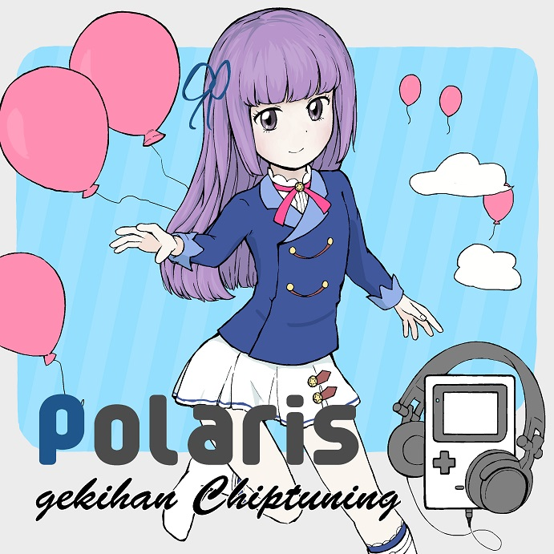
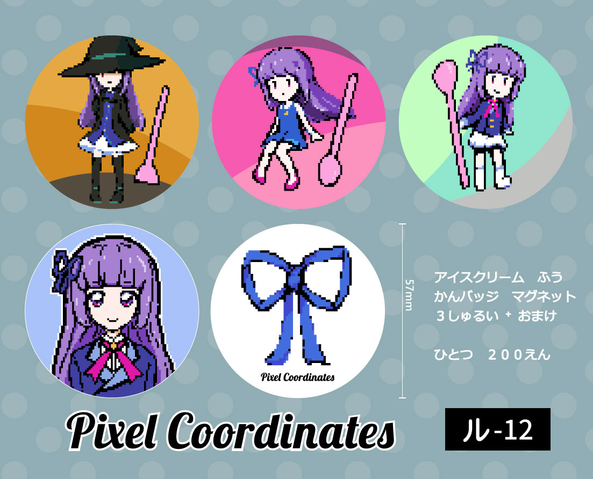

- sumire.work -
(サイトはまだ構築中...かな)07/14
芸能人はカードが命16で頒布する「gekihan Chiptuning Polaris」のデザインを担当したよ。
- 収録曲 -
01. AIKATSU MODE
02. 磨かれた美しい刃
03. 星宮家の日常
04. プレイバック
05. 芸能人はカードが命 ver.2
06. 夢のオールスター
07. それぞれの大事なもの
裏側のデザインはkktjsのbbvテーマ風にしたから、知ってる人には少し面白い...かな。
ディベロッパーさんにはとっても気に入ってもらえたみたい。
通販の受付は7月22日から開始するね。もう少し待ってて。
03/03
明日、芸能人はカードが命15で頒布する音楽CDのデザインを担当したよ。
今回はデモ版を頒布して、完成は次の即売会になるみたい。
Patreonで支援してくれている人にはお礼としてプレゼントしたいから、
準備が出来たらメールするね。
07/12
16日の芸能人はカードが命13で、缶バッジマグネットを頒布するよ。
Patreonで支援してくれた人にはプレゼントしたい...かな、メールを確認してみて。
申込や入稿を手伝ってくれたディベロッパーさんありがとう、当日はみんなよろしくね。
(ショップ委託販売は8月になっちゃうかな...)
06/18
キラキラッター用Webアプリのpreview版を公開したよ。まだ未完成な部分がたくさんあるけど、試してみてね。
気になるところは #kktjs を付けてカツ!してくれると嬉しいかな。
私(@sumire)にリプをくれても大丈夫だよ。
よろしくね。
06/07
芸能人はカードが命13の、サークル参加申込に当選したみたい、ディベロッパーさんに協力してもらって、グッズを頒布するよ。
私とディベロッパーさんとの合同サークル Pixel Coordinates をよろしくね。
アカウント
@sumire@kirakiratter.com@sumire_kkt@twitter.com
github.com/sumire-kkt
qiitaの記事一覧